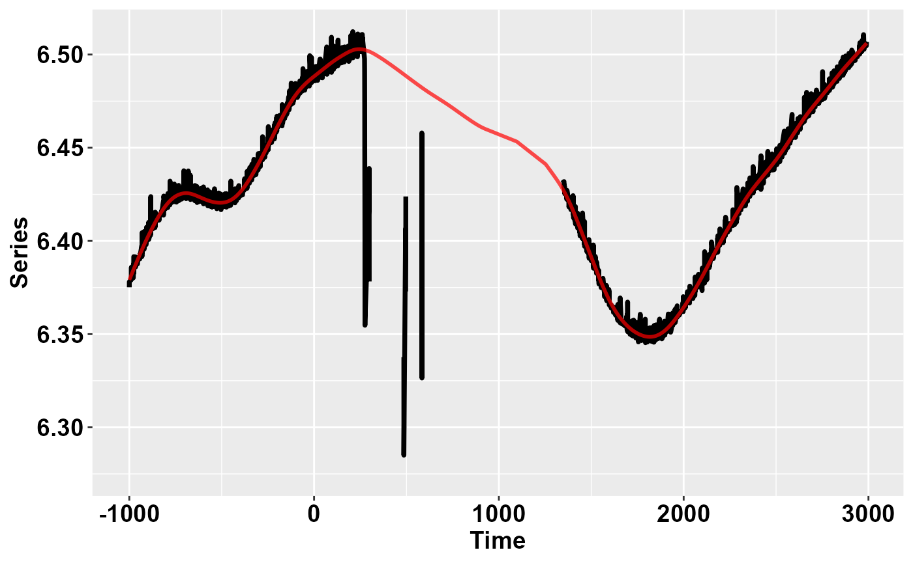
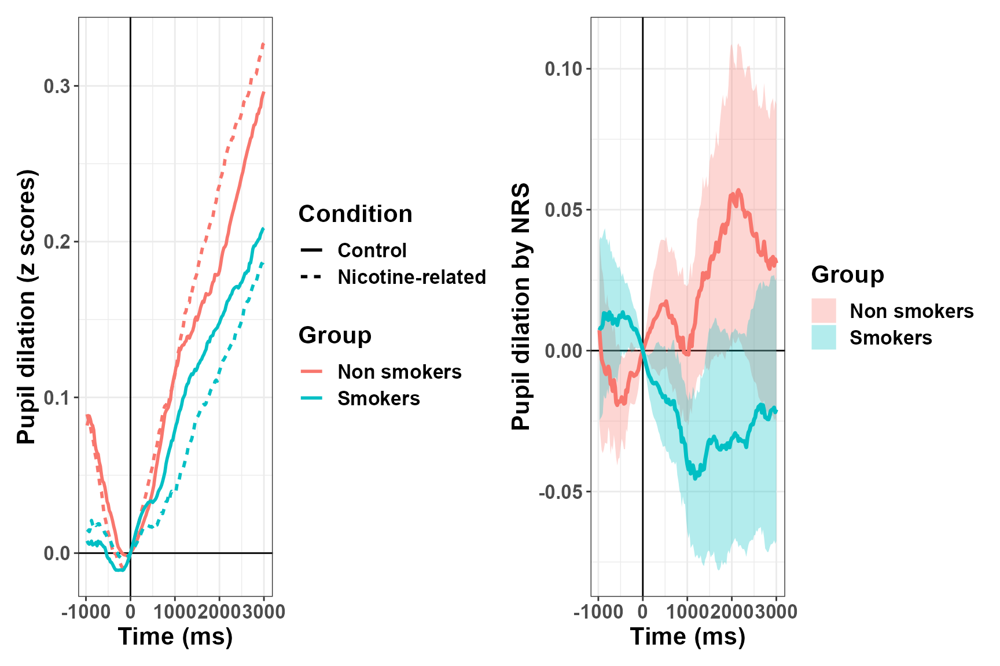
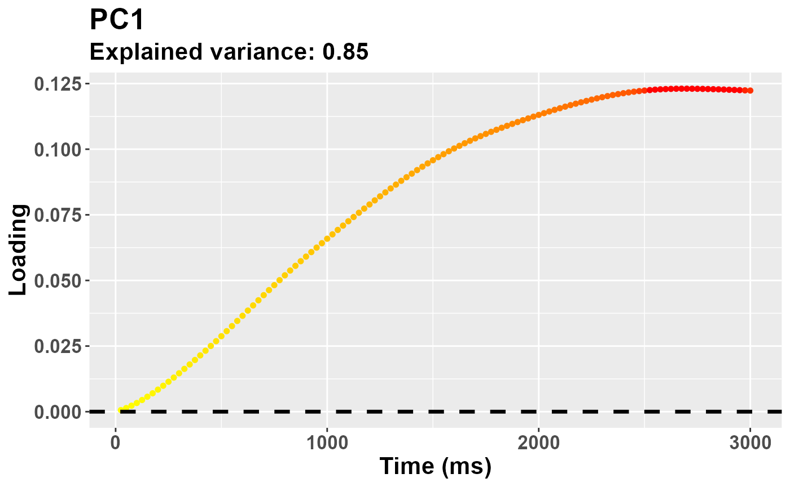
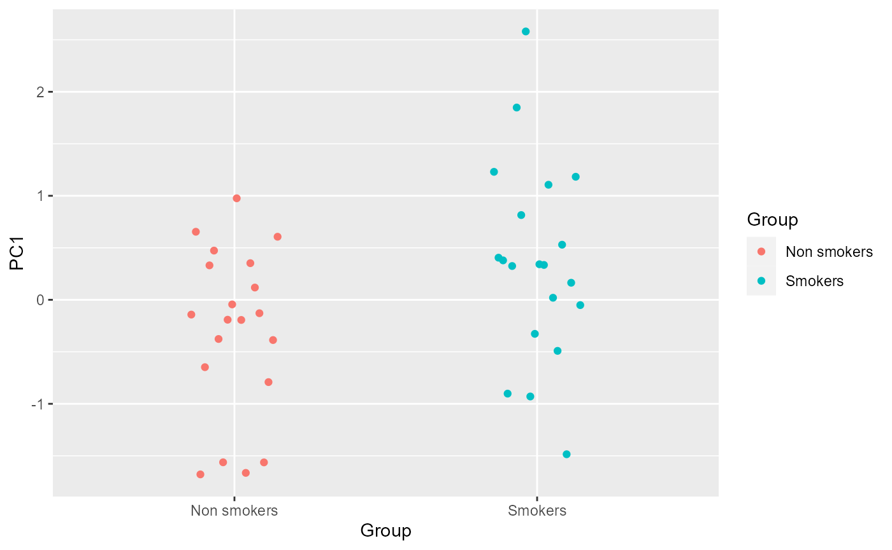
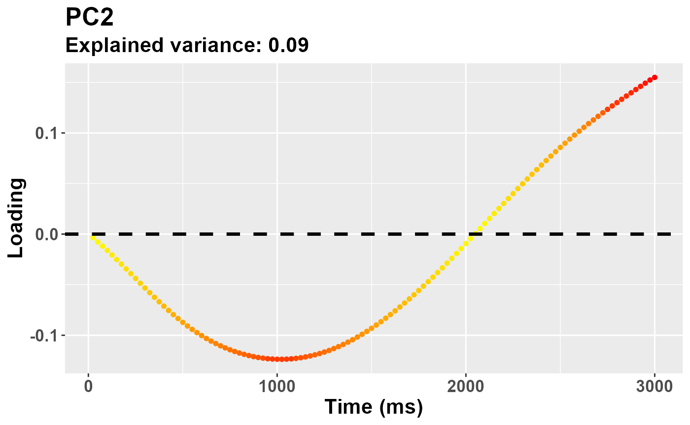
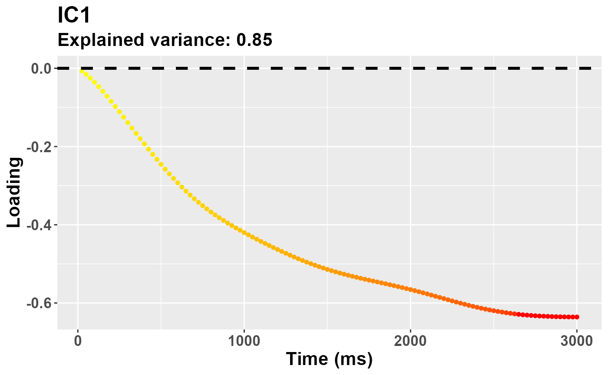
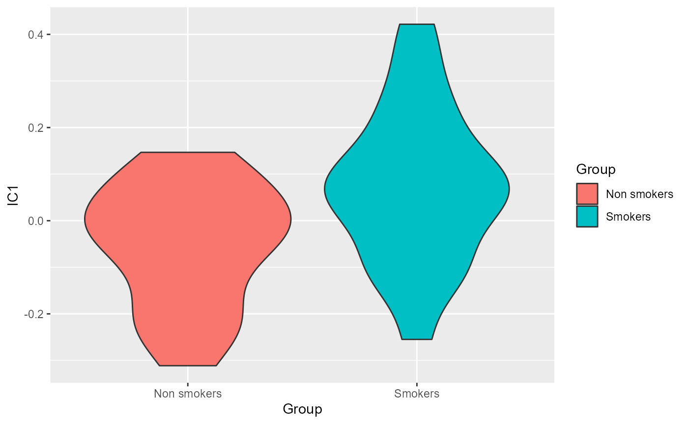

vignettes/Pupilla_TOBII_ReduceFeatures.Rmd
Pupilla_TOBII_ReduceFeatures.RmdPupilla gathers several functions that are designed to
facilitate the analysis of pupillometry experiments as commonly
performed in cognitive neuroscience, e.g. event-related designs,
although its use could be much more general.
The typical analysis pipeline would, coarsely, include the following steps:
Read the data. This part can vary a lot
depending on the eyetracker used, the individual OS, local paths, how
the experiment was coded, etc. Pupilla does provide utility
functions to read from common eyetrackers (e.g., TOBII, EyeLink) but
clearly this passage will need to be tailored to your files.
Prepare the data. As above, this part may need to be tailored to your specific needs; however, several steps are very common across pipelines, and will be presented in this vignette.
Preprocessing. Pupillometry needs robust preprocessing of the raw data, in order to reduce noise and artifacts (such as those due to blinks). Once the data is properly prepared, this aspect can be translated across several different scenarios. Of course, flexibility and adapting to your own data is warmly advised.
Statistical modelling. Pupilla
offers two approaches: 1) crossvalidated LMEMs as in Mathôt
& Vilotijević, 2022); and 2) an original approach through
feature reduction. This vignette covers and illustrates the second
option.
For this example we use data from Blini
and Zorzi, 2023. Data can be retrieved from the associated OSF repository. The eyetracker used was
the TOBII spectrum. Unfortunately, the eyetracking data acquired this
way are quite large, meaning that reading them will take some time. In
this study (termed Passive Viewing (PV) task) 40
participants (following exclusions), of which 20 smokers and 20 non
smokers, were given, as the name suggests, several images to look at:
some were related to nicotine, and some were neutral controls. Contrary
to what the name suggest, instead, they also had to report (hence
somehow actively) the occurrence of a rare probe, which was presented on
screen very sparingly; this was to ensure central fixation was
maintained together with a minimum of task engagement. Details are
provided in the accompanying paper, what matters here is that smokers
were found to have pupillary constriction when
nicotine-related images (as opposed to neutral ones) were presented.
Please note that the pipeline and the default parameters in
Pupilla have changed since that paper came out in PBR, so
that results will be slightly different.
The library Pupilla must be installed first, and only
once, through devtools:
#install.packages("devtools")
devtools::install_github("EBlini/Pupilla")Dependencies will be installed automatically. We will then need to load the following packages:
##
## Attaching package: 'dplyr'## The following objects are masked from 'package:stats':
##
## filter, lag## The following objects are masked from 'package:base':
##
## intersect, setdiff, setequal, unionThe following steps in this section vary a lot as a function of the
software used for the presentation of the stimuli and your machine.
Pupilla is tested on windows machines, you may thus have
troubles using the utility functions to read all participants
altogether. But this is how you would do in Windows:
#set your own working directory first!
#wd= choose.dir()
subject= 1:51 #vector of ids
#groups- whether ids are smokers or not;
#this I didn't know beforehand so I have to add manually this var
group= c("NS", "S", "NS", "NS", "S","S", "NS", "S",
"S", "S", "S", "S", "S", "S", "NS", "S",
"NS", "S", "NS", "S", "NS", "NS", "S", "NS",
"S", "NS", "NS", "NS", "NS", "NS", "NS", "S",
"S", "S", "S", "NS", "NS", "NS", "NS", "S",
"NS", "NS", "NS", "S", "S", "S", "S", "S",
"S", "S", "S")
#read all the files
data= read_TOBII(subject, wd)
#split for eyetracker and behavioral data
ET= data$ET
BD= data$BDAs you can see:
So, reading the files should be straightforward. If this utility
function does not work for you, however, just assume that it works by
iterating data.table::fread() across (eyetracking) files.
Also, please note that by default the first 7 lines are skipped, but
your eyetracker files may need different values!
I have the bad (?) habit to only record essential info in the eyetracker file, :)
As a result, very often variables that are only present in the
behavioral file (e.g., response time, condition) must be copied to the
eyetracker file, which has very different dimensions (several lines per
trial, depending on sampling rate). Pupilla has utility
functions to do precisely that. Let’s move in order though.
We start by filling the “Event” column, which is blank except for when the Event changes:
Based on the Event column changing value, we can establish the trial
number (yes, this info is also missing from the eyetracker file!).
detect_change() simply updates a counter for every instance
in which the parameter “key” appears again in a vector (and only the
first time).
ET$Subject= ET$p_ID
ET= ET %>%
group_by(Subject) %>%
mutate(Trial= detect_change(Event,
key= "scrambled"))Few initial samples are not assigned to a trial, and shall be removed:
ET= ET[ET$Trial>=0,]We can start now with copying the relevant variables to the ET dataframe. We start by adding the variable Phase (whether a trial was labelled as practice, and therefore removed afterwards, or experimental).
#whether it's practice or experiment
ET$Phase= copy_variable("Phase")
#discard practice
ET= ET[ET$Phase== "experiment",]
BD= BD[BD$Phase== "experiment",]We move on with the variable Trial:
ET$Trial= copy_variable("Trial")
range(ET$Trial)## [1] 0 199
range(BD$Trial)## [1] 0 199And finally all the variables that make up our experimental design:
ET$Condition= copy_variable("Condition")
# ET$Cue= copy_variable("Cue")
# ET$Accuracy= copy_variable("Accuracy")
# ET$Image= copy_variable("Image")
# ET$RT = as.numeric(copy_variable("RT"))(Of these, only Condition is relevant here, the rest we can skip for this vignette).
We can finally start handling and preparing the signal about pupil size!
The TOBII acquired both the left and right eye. So we consolidate the two in one single variable that represents the average of the two eyes - but only when both were judged valid by TOBII’s algorithms.
Because the TOBII stores pupil size in mms, we can fetch plausible values (between 2 and 7 mms) and discard the outlier ones straight away.
ET$Pupil= consolidate_signal(ET$PupilSizeLeft, ET$PupilSizeRight,
ET$PupilValidityLeft, ET$PupilValidityRight,
strategy = "conservative",
plausible= c(2, 7))We then isolate the two experimental stages: scrambled images (our baseline) vs target images.
We can now realign the timestamps to the first sample of the scrambled phase. As you can see timestamps are in absolute values, and their difference is not really constant.
head(ET$TimeStamp)## [1] 58675.74 58676.48 58686.21 58686.89 58687.61 58687.98## [1] 0.000 0.740 10.469 11.155 11.874 12.240In theory each trial had to last 4500 ms, but one or two for some reasons missed something and last longer, we shall discard them.
range(ET$Time)## [1] 0.00 18578.32
ET= ET %>%
group_by(Subject, Trial) %>%
mutate(Anomaly= ifelse(max(Time)>4500, 1, 0))
(table(ET$p_ID[ET$Anomaly== 1],
ET$Trial[ET$Anomaly== 1])) #for 1 participant, the trial around the break...##
## 100
## 15 11237
ET= ET[ET$Anomaly== 0,]Now that everything is clean, we realign Time not to the beginning of the trial, but to the moment in which the target was presented:
ET= ET %>%
group_by(Subject, Trial) %>%
mutate(Time= Time - Time[Event== "target"][1])
ET= ET[ET$Time >-1000 & ET$Time<3000,]Finally, this is the moment in which the Group variable is added. Furthermore, we discard the participants who did not present sufficient valid trials; this would actually be seen afterwards, but in this experiment we add another task for which eye movements quality was important, so that exclusions have been decided based on the results of both tasks.
We can finally move to the real thing! The signal must be
processed so that the impact of artifacts, blinks, etc.
is reduced. The easiest way to do that in Pupilla would be
to use the pre_process() function. You may want, however,
to consider whether the specific default parameters are applicable to
your data. For a description of the parameters, see
?pp_options(). You can always change the default parameters
by calling the options globally, other than within the function itself.
E.g.:
#the default parameters:
pp_options()## $thresh
## [1] 3
##
## $speed_method
## [1] "z"
##
## $extend_by
## [1] 3
##
## $island_size
## [1] 4
##
## $extend_blink
## [1] 3
##
## $overall_thresh
## [1] 0.4
##
## $consecutive_thresh
## NULL
##
## $spar
## [1] 0.7
#this changes the width of the window for smoothing
pp_options("spar"= 0.8)
#entire preprocessing
ET= ET %>%
group_by(Subject, Trial) %>%
mutate(Pupil_pp= pre_process(Pupil, Time))And that’s it! You can check the result of the pipeline visually as follows:
ET %>% filter(Subject==12 & Trial== 104) %>%
check_series("Pupil", "Pupil_pp", "Time")
Or you can use the function Pupilla::check_all_series()
to have all the plots (that is, for all ids and trials) saved as images
in your path.
In the image, the black dots represent the raw, initial data. The red
line depicts instead the reconstructed, preprocessed signal.
pre_process() simply runs, in order, functions for
deblinking (through a velocity-based criterion), interpolation, and
smoothing through cubic splines. Trials in which data points do not
reach a given quality threshold are set to NA; trials that can be
recovered are, instead, recovered.
So, for those trials in which we couldn’t restore a reliable signal, we simply discard them!
Another common step is downsampling, we choose bins of 25 ms:
ET$Time= downsample_time(ET$Time, 25)
#summarise the data for the new binned variable
ET= ET %>%
group_by(Subject, Group, Condition, Trial, Time) %>%
summarise(Pupil= median(Pupil_pp, na.rm = T))Next, I personally prefer to work with z-scores instead of arbitrary units or mms, as to have a standardized measure. So:
The last, crucial step is the baseline subtraction. In analogy to what done in the paper I simply realign the traces to the beginning of the target presentation phase, just like what done for Time. A more extended period would be advisable.
We are done!
Briefly, the data looks like this:
## $ncol
##
## $nrow
## NULL
##
## $byrow
## NULL
##
## $widths
## NULL
##
## $heights
## NULL
##
## $guides
## NULL
##
## $tag_level
## NULL
##
## $design
## NULL
##
## attr(,"class")
## [1] "plot_layout"We have now different paths for statistical modelling. In the
original paper we choose a cluster-based permutation test. This approach
is often computationally-intensive, though it works very well. Other
approaches involve crossvalidated LMEMs (implemented in the package
Pupilla but shown in another vignette) or feature
reduction. Feature reduction is not the norm in pupillometry,
but it is common in other branches of neuroimaging - e.g., fMRI. It
works very well, when data is large, in reducing its dimensions as to
have more manageable variables to work with. In the case of
pupillometry, because the signal is strongly autocorrelated, this is
particularly appealing. Pupilla can summarise the traces
through both PCA and ICA as follows.
data= ET[ET$Time>0,] #remove the baseline
dv= "Pupil"
time= "Time"
id= "Subject"
trial= "Trial"
add= c("Group", "Condition") #save to final dataframe
Ncomp= NULL #defaults to 95% of variance retained
rf = reduce_PCA(data,
dv,
time,
id,
trial,
Ncomp = NULL,
scaling = F,
add)The traces of 40 participants x (about) 200 trials each can be summarised by very few PCs (you only need 3 variables to account for >98% of the data!):
rf$summaryPCA[, 1:4]## PC1 PC2 PC3 PC4
## Standard deviation 5.747356 1.889998 1.108391 0.7121974
## Proportion of Variance 0.849950 0.091910 0.031610 0.0130500
## Cumulative Proportion 0.849950 0.941860 0.973480 0.9865300Each PC accounts for a specific share of the variance, and has
distinctive loadings - you can think at them as the weighted
contribution to the PC of each time point, in a way that is very similar
to a cluster, though graded. You can assess the loadings directly or
through a plot conveniently returned by
plot_loadings().
plot_loadings("PC1", rf)
The loadings for the first PC, as expected, resemble very much the shape of the data. During the trial there was a steady pupil dilation, which is well captured here in that later timepoints have larger weights. The sign of the loadings is, instead, arbitrary, and you could very well multiply them all for -1.
Each component is summarised with only one score per trial! This is far more manageable for most uses, e.g. to obtain intuitive and easy to interpret summary scores. Scores can be used directly - e.g., to correlate with other experimental variables such as questionnaires or neuroimaging data - or used for a second level analysis (e.g., simple t tests). In the case of our Group x Condition interaction, we start by summarising each trial into summary scores, and then scoring the difference between conditions:
Scores= rf$Scores
Scores= Scores %>%
group_by(id, Group, Condition) %>%
summarise(PC1= mean(PC1), PC2= mean(PC2)) %>%
group_by(id, Group) %>%
reframe(PC1= PC1[Condition== "Control"]-PC1[Condition== "Nicotine-related"],
PC2= PC2[Condition== "Control"]-PC2[Condition== "Nicotine-related"])For PC1:
#plots of the difference
ggplot(Scores, aes(x= Group,
color= Group,
y= PC1)) +
geom_point(position = position_dodge2(0.3))
t.test(Scores$PC1[Scores$Group== "Smokers"],
Scores$PC1[Scores$Group== "Non smokers"])##
## Welch Two Sample t-test
##
## data: Scores$PC1[Scores$Group == "Smokers"] and Scores$PC1[Scores$Group == "Non smokers"]
## t = 2.303, df = 36.918, p-value = 0.02701
## alternative hypothesis: true difference in means is not equal to 0
## 95 percent confidence interval:
## 0.07770775 1.21602944
## sample estimates:
## mean of x mean of y
## 0.3538250 -0.2930436There is a significant interaction between group and condition that is captured by the first PC!
The second PC is not, instead, significant:
t.test(Scores$PC2[Scores$Group== "Smokers"],
Scores$PC2[Scores$Group== "Non smokers"])##
## Welch Two Sample t-test
##
## data: Scores$PC2[Scores$Group == "Smokers"] and Scores$PC2[Scores$Group == "Non smokers"]
## t = -0.57373, df = 34.168, p-value = 0.5699
## alternative hypothesis: true difference in means is not equal to 0
## 95 percent confidence interval:
## -0.3254013 0.1821000
## sample estimates:
## mean of x mean of y
## -0.05093052 0.02072016Features after the first ones progressively account for the remaining variance, and may thus accomodate for subtle differences between conditions that do not alter necessarily the overall shape of pupillary dilation. In other words, the next pcs describe some sort of contrast functions like this one:
plot_loadings("PC2", rf)
Choosing ICA is as simple as that!
rf2 = reduce_ICA(data,
dv,
time,
id,
trial,
Ncomp = NULL,
scaling = F,
add)Pupilla uses ica::icafast for independent
components analysis. The overall explained variance remains that of PCA.
However, the single contribution of components should be weighted
by:
rf2$ICA$vafs## [1] 0.72918272 0.17781761 0.06647561In other words, do not trust much the title of the loadings plot - that refers to the PCA model:
plot_loadings("IC1", rf2)
So in this case the first IC and the first PC are very similar, only the scale changes a bit, as both reflect the overall dilation trend - again, the sign of the loadings does not really matter (just check the direction for the interpretation of your data).
Scores2= rf2$Scores
Scores2= Scores2 %>%
group_by(id, Group, Condition) %>%
summarise(IC1= mean(IC1), IC2= mean(IC2)) %>%
group_by(id, Group) %>%
reframe(IC1= IC1[Condition== "Control"]-IC1[Condition== "Nicotine-related"],
IC2= IC2[Condition== "Control"]-IC2[Condition== "Nicotine-related"])Results are (somehow) similar to PCA:
#plots of the difference
ggplot(Scores2, aes(x= Group,
color= Group,
y= IC1)) +
geom_point(position = position_dodge2(0.3))
t.test(Scores2$IC1[Scores$Group== "Smokers"],
Scores2$IC1[Scores$Group== "Non smokers"])##
## Welch Two Sample t-test
##
## data: Scores2$IC1[Scores$Group == "Smokers"] and Scores2$IC1[Scores$Group == "Non smokers"]
## t = -1.9344, df = 37.973, p-value = 0.06054
## alternative hypothesis: true difference in means is not equal to 0
## 95 percent confidence interval:
## -0.215057273 0.004892434
## sample estimates:
## mean of x mean of y
## -0.05883640 0.04624602In this vignette we went through an example of how you could use the
functions in Pupilla for your own data, in areas
encompassing loading, preparing, and preprocessing the data.
Furthermore, a novel approach - and, as such, object of active research
- to analyze the data has been presented. In this approach the signal is
decomposed in few, very manageable scores, the explain efficiently the
(severely autocorrelated) data with only a handful of scores. These
scores can be attributed to differences in pupil size at different time
points, as can be explored visually as the loadings of specific
components. Another advantage is that, in the case of multiple
components presenting significant effects, the weights can be
backprojected as a linear combination of the coefficients and the
loadings (see, for more details, backprojection in my other package, FCnet). This approach has
therefore the potential to be very flexible.
This approach will be discussed in more details in the accompanying paper.
Packages’ versions:
## R version 4.2.3 (2023-03-15 ucrt)
## Platform: x86_64-w64-mingw32/x64 (64-bit)
## Running under: Windows 10 x64 (build 19045)
##
## Matrix products: default
##
## locale:
## [1] LC_COLLATE=Italian_Italy.utf8 LC_CTYPE=Italian_Italy.utf8 LC_MONETARY=Italian_Italy.utf8 LC_NUMERIC=C LC_TIME=Italian_Italy.utf8
##
## attached base packages:
## [1] stats graphics grDevices utils datasets methods base
##
## other attached packages:
## [1] tidyr_1.3.0 ggplot2_3.4.1 dplyr_1.1.0 Pupilla_0.0.0.9000
##
## loaded via a namespace (and not attached):
## [1] ica_1.0-3 highr_0.10 bslib_0.4.2 compiler_4.2.3 pillar_1.8.1 jquerylib_0.1.4 tools_4.2.3 digest_0.6.31 lattice_0.20-45 jsonlite_1.8.4 evaluate_0.20 memoise_2.0.1 lifecycle_1.0.3 tibble_3.2.0 gtable_0.3.1 pkgconfig_2.0.3 rlang_1.1.0 cli_3.6.0 rstudioapi_0.14 patchwork_1.1.2 yaml_2.3.7 pkgdown_1.6.1 xfun_0.39 fastmap_1.1.1 withr_2.5.0 stringr_1.5.0 knitr_1.42 desc_1.4.2 generics_0.1.3 fs_1.6.1 vctrs_0.6.0 sass_0.4.5 systemfonts_1.0.4 rprojroot_2.0.3 grid_4.2.3 tidyselect_1.2.0 here_1.0.1 data.table_1.14.8 glue_1.6.2 R6_2.5.1 textshaping_0.3.6 fansi_1.0.4 rmarkdown_2.20 farver_2.1.1 purrr_1.0.1 magrittr_2.0.3 settings_0.2.7 scales_1.2.1 htmltools_0.5.4 colorspace_2.1-0 labeling_0.4.2 ragg_1.2.5 utf8_1.2.3 stringi_1.7.12 munsell_0.5.0
## [56] cachem_1.0.7 zoo_1.8-11